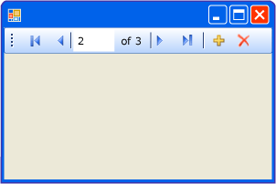

Общие сведения об элементе управления BindingNavigator (Windows Forms)
Элемент управления BindingNavigator можно использовать для создания стандартных средств поиска и изменения данных в форме Windows Forms. Элемент управления BindingNavigator часто используется с компонентом BindingSource, позволяя пользователям переходить по записям данных в форме и взаимодействовать с ними.
Как работает элемент управления BindingNavigator
Элемент управления BindingNavigator состоит из элемента ToolStrip с набором объектов ToolStripItem для большинства обычных действий с данными: их добавления, удаления и перемещения по ним. По умолчанию элемент управления BindingNavigator содержит эти стандартные кнопки. На следующем снимке экрана показан BindingNavigator элемента управления в форме:

В таблице ниже перечислены элементы управления и их функции.
| Элемент управления | Функция |
|---|---|
| AddNewItem button | Вставляет новую строку в базовый источник данных. |
| DeleteItem button | Удаляет текущую строку из базового источника данных. |
| MoveFirstItem button | Переход к первому элементу базового источника данных. |
| MoveLastItem button | Переход к последнему элементу базового источника данных. |
| MoveNextItem button | Переход к следующему элементу базового источника данных. |
| MovePreviousItem button | Переход к предыдущему элементу базового источника данных. |
| PositionItem Текстовое поле | Возвращает текущую позицию в базовом источнике данных. |
| CountItem Текстовое поле | Возвращает общее число элементов в базовом источнике данных. |
Каждому элементу управления этой коллекции соответствует член компонента BindingSource, обеспечивающий ту же функциональность программным путем. Например, кнопка MoveFirstItem соответствует методу MoveFirst компонента BindingSource, кнопка DeleteItem соответствует методу RemoveCurrent и т. д.
Если кнопки по умолчанию не удовлетворяют требованиям приложения или необходимо использовать дополнительные кнопки с иной функциональностью, можно создать собственные кнопки ToolStrip. Также см. раздел Как Добавление загрузки, сохранения и кнопки "Отмена" для Windows Forms элемента управления BindingNavigator.